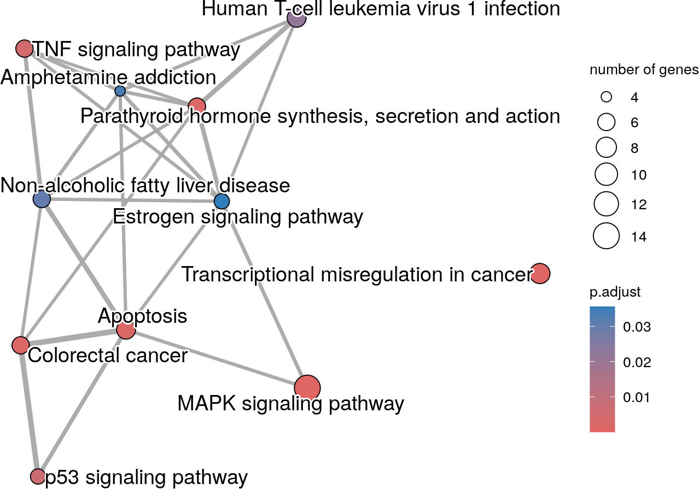

From functional enrichment results to biological networks
22 September 2023
Contents
Package: enrichViewNet
Authors: Astrid Deschênes [aut, cre] (https://orcid.org/0000-0001-7846-6749),
Pascal Belleau [aut] (https://orcid.org/0000-0002-0802-1071),
Robert L. Faure [aut] (https://orcid.org/0000-0003-1798-4723),
Maria J. Fernandes [aut] (https://orcid.org/0000-0002-3973-025X),
David A. Tuveson [aut] (https://orcid.org/0000-0002-8017-2712)
Version: 0.0.4
Compiled date: 2023-09-22
License: Artistic-2.0
1 Licensing
The enrichViewNet package and the underlying enrichViewNet code are distributed under the Artistic license 2.0. You are free to use and redistribute this software.
2 Citing
If you use this package for a publication, we would ask you to cite the following:
eschênes A, Belleau P, Faure RL, Fernandes MJ, Tuveson DA (2021). enrichViewNet: From functional enrichment results to biological networks. https://github.com/adeschen/enrichViewNet, https://adeschen.github.io/enrichViewNet/.
3 Introduction
High-throughput technologies are routinely used in basic and applied research and are key drivers of scientific discovery. A major challenge in using these experimental approaches is the analysis of the large amount of data generated. These include lists of proteins or genes generated by mass spectrometry, single-cell RNA sequencing and/or microarray analysis, respectively. There is thus a need for robust bioinformatic and statistical tools that can analyze these large datasets and display the data in the form of networks that illustrate the biological and conceptual links with findings in the literature. This gap has been partially addressed by several bioinformatic tools that perform enrichment analysis of the data and/or present it in the form of networks.
Functional enrichment analysis tools, such as Enrichr (Kuleshov et al. 2016) and DAVID (Dennis et al. 2003), are specialized in positioning novel findings against well curated data sources of biological processes and pathways. Most specifically, those tools identify functionally coherent gene sets that are statistically over- (or under-) represented in a gene list. The traditional output of an enrichment analysis tool is a table containing the significant gene sets with their associated statistics. While those results are extremely useful, their interpretation is challenging. The visual representation of these results as a network can greatly facilitate the interpretation of the data.
Biological network models are visual representations of various biological interacting elements which are based on mathematical graphs. In those networks, the biological elements are generally represented by nodes while the interactions and relationships are represented by edges. One of the widely used network tools in the quantitative biology community is the open source software Cytoscape (Shannon et al. 2003). In addition of biological data visualization and network analysis, Cytoscape can be expended through the use of specialized plug-ins such as BiNGO that calculates over-represented GO terms in a network (Maere, Heymans, and Kuiper 2005) or CentiScaPe that identifies relevant network nodes (Scardoni, Petterlini, and Laudanna 2009).
The g:Profiler enrichment analysis tool (Raudvere et al. 2019) is web based and has the particularity of being accompanied by the CRAN package gprofiler2 (Kolberg et al. 2020). The gprofiler2 package gives the opportunity to researchers to incorporate functional enrichment analysis into automated analysis pipelines written in R. This greatly facilitates research reproducibility.
The enrichViewNet package enables the visualization of functional enrichment results as network graphs. Visualization of enriched terms aims to facilitate the analyses of complex results. Compared to popular enrichment visualization graphs such as bar plots and dot plots, network graphs unveil the connection between the terms as significant terms often share one or multiple genes. Moreover, the enrichViewNet package takes advantage of a powerful network visualization tool which is Cytoscape. By doing so, all the functionalities of this mature software can be used to personalize and analyze the enrichment networks.
First, the enrichViewNet package enables the visualization of enrichment results, in a format corresponding to the one generated by gprofiler2, as a customizable Cytoscape network (Shannon et al. 2003). In the biological networks generated by enrichViewNet, both gene datasets (GO terms/pathways/protein complexes) and genes associated to the datasets are represented as nodes. While the edges connect each gene to its dataset(s). Only genes present in the query used for the enrichment analysis are shown.

Figure 1: A network where significant GO terms and genes are presented as nodes while edges connect each gene to its associated term(s)
The enrichViewNet package offers the option to generate a network for only a portion of the significant terms by selecting the source or by providing a specific list of terms.Once the network is created, the user can personalize the visual attributes and integrate external information such as expression profiles, phenotypes and other molecular states. The user can also perform network analysis.
In addition, the enrichViewNet package also provides the option to create enrichment maps from functional enrichment results. The enrichment maps have been introduced in the Bioconductor enrichplot package (Yu 2022). Enrichment maps enable the visualization of enriched terms into a network with edges connecting overlapping genes. Thus, enriched terms with overlapping genes cluster together. This type of graphs facilitate the identification of functional modules.

Figure 2: An enrichment map using significant Kegg terms
4 Installation
To install the latest version accessible on the enrichViewNet Github Website, the devtools package is required.
## Install the latest version of enrichViewNet
library(devtools)
devtools::install_github('adeschen/enrichViewNet')It is also possible to install an official release. The list of available releases is posted on the enrichViewNet Release Website.
## Install the version v0.1 of enrichViewNet
## using 'ref' parameter
library(devtools)
devtools::install_github('adeschen/enrichViewNet', ref = "v0.0.4")5 General workflow
The following workflow gives an overview of the capabilities of enrichViewNet:

Figure 3: The enrichViewNet workflow
The principal input of enrichViewNet is a functional enrichment result in a format identical to the one generated by the CRAN gprofiler2 package.
From an enrichment result, the enrichViewNet offers two options:
- generate a gene-term network that can be loaded in Cytoscape software
- generate a enrichment map
For the gene-term network, the installation of Cytoscape software is highly recommended.
6 Transforming enrichment results into a gene-term network loadable in Cytoscape
The following workflow gives an overview of the steps associated to the creation of an gene-term network loadable in Cytoscape.

Figure 4: From an enrichment list to a Cytoscape network
The key steps for the workflow are:
| Step | Function |
|---|---|
| Run an enrichment analysis | gprofiler2::gost() |
| Start Cytoscape | outside R |
| Create a Cytoscape network | createNetwork() |
The package::function() notation is used for functions from other packages.
6.1 Run an enrichment analysis
The first step consists in running an enrichment analysis with gprofiler2 package. The output of the gprofiler2::gost() is a list and should be saved.
## Required library
library(gprofiler2)
## The dataset of differentially expressed genes done between
## napabucasin treated and DMSO control parental (Froeling et al 2019)
## All genes testd are present
data("parentalNapaVsDMSODEG")
## Retain significant results
## (absolute fold change superior to 1 and adjusted p-value inferior to 0.05)
retained <- which(abs(parentalNapaVsDMSODEG$log2FoldChange) > 1 &
parentalNapaVsDMSODEG$padj < 0.05)
signRes <- parentalNapaVsDMSODEG[retained, ]
## Run one functional enrichment analysis using all significant genes
## The species is homo sapiens ("hsapiens")
## The g:SCS multiple testing correction method (Raudvere U et al 2019)
## The WikiPathways database is used
## Only the significant results are retained (significant=TRUE)
## The evidence codes are included in the results (evcodes=TRUE)
## A custom background included the tested genes is used
gostres <- gprofiler2::gost(
query=list(parental_napa_vs_DMSO=unique(signRes$EnsemblID)),
organism="hsapiens",
correction_method="g_SCS",
sources=c("WP"),
significant=TRUE,
evcodes=TRUE,
custom_bg=unique(parentalNapaVsDMSODEG$EnsemblID))The gost() function returns an named list of 2 entries: * The result entry contains the enrichment results. * The meta entry contains the metadata information.
## The 'gostres' object is a list of 2 entries
## The 'result' entry contains the enrichment results
## The 'meta' entry contains the metadata information
## Some columns of interest in the results
gostres$result[1:4, c("query", "p_value", "term_size",
"query_size", "intersection_size", "term_id")]## query p_value term_size query_size intersection_size
## 1 parental_napa_vs_DMSO 3.234502e-14 153 157 17
## 2 parental_napa_vs_DMSO 2.900542e-08 25 157 7
## 3 parental_napa_vs_DMSO 9.750556e-07 23 157 6
## 4 parental_napa_vs_DMSO 9.829403e-07 391 157 16
## term_id
## 1 WP:WP5094
## 2 WP:WP3613
## 3 WP:WP4925
## 4 WP:WP3888
## The term names can be longer than the one shown
gostres$result[19:22, c("term_id", "source", "term_name")]## term_id source term_name
## 19 WP:WP1772 WP Apoptosis modulation and signaling
## 20 WP:WP2374 WP Oncostatin M signaling pathway
## 21 WP:WP4970 WP Galanin receptor pathway
## 22 WP:WP2877 WP Vitamin D receptor pathway6.2 Start Cytoscape
Cytoscape is an open source software for visualizing networks. It enables network integration with any type of attribute data. The Cytoscape software is available at the Cytoscape website.

Figure 5: Cytoscape software logo
The Cytoscape network generated by enrichViewNet will be automatically loaded into the Cytoscape software when the application is running.
If the application is not running, a CX JSON file will be created. The file can then be loaded manually into the Cytoscape software.
6.3 Create a gene-term network
TODO
## Load demo gprofiler2 enrichment result
data("parentalNapaVsDMSOEnrichment")
## Create network for REACTOME significant terms
## The 'removeRoot=TRUE' parameter removes the root term from the network
createNetwork(gostObject=parentalNapaVsDMSOEnrichment, source="REAC",
removeRoot=TRUE, title="REACTOME_All",
collection="parental_napa_vs_DMSO")The following figure shows what the gene-term network looks like in Cytoscape. As there are numerous significant Reactome terms, the network is a bit hectic.
Figure 6: All reactome terms in a gene-term network loaded in Cytoscape
To address this situation, a updated gene-term network containing only Reactome terms of interest can be created.
## Load demo gprofiler2 enrichment result
data("parentalNapaVsDMSOEnrichment")
## List of terms of interest
reactomeSelected <- c("REAC:R-HSA-9031628", "REAC:R-HSA-198725",
"REAC:R-HSA-9614085", "REAC:R-HSA-212436",
"REAC:R-HSA-9614657", "REAC:R-HSA-73857",
"REAC:R-HSA-74160", "REAC:R-HSA-381340",
"REAC:R-HSA-9617828")
## All enrichment results
results <- parentalNapaVsDMSOEnrichment$result
## Retain selected results
selectedRes <- results[which(results$term_id %in% reactomeSelected), ]
## Print the first selected terms
selectedRes[, c("term_name")]## [1] "NGF-stimulated transcription"
## [2] "Nuclear Events (kinase and transcription factor activation)"
## [3] "FOXO-mediated transcription"
## [4] "Generic Transcription Pathway"
## [5] "FOXO-mediated transcription of cell death genes"
## [6] "RNA Polymerase II Transcription"
## [7] "Gene expression (Transcription)"
## [8] "Transcriptional regulation of white adipocyte differentiation"
## [9] "FOXO-mediated transcription of cell cycle genes"
## Create network for REACTOME selected terms
## The 'source="TERM_ID"' parameter enable to specify a personalized
## list of terms of interest
createNetwork(gostObject=parentalNapaVsDMSOEnrichment, source="TERM_ID",
termIDs=selectedRes$term_id, title="REACTOME_Selected",
collection="parental_napa_vs_DMSO")7 Transforming enrichment results into an enrichment map
The following workflow gives an overview of the steps associated to the creation of an enrichment map.
The key steps for the workflow are:
| Step | Function |
|---|---|
| Run an enrichment analysis | gprofiler2::gost() |
| Create an enrichment map | createEnrichMap() |
The package::function() notation is used for functions from other packages.
7.1 Run an enrichment analysis
The first step consists in running an enrichment analysis with gprofiler2 package. The output of the gprofiler2::gost() is a list and should be saved.
## Required library
library(gprofiler2)
## The dataset of differentially expressed genes done between
## napabucasin treated and DMSO control parental (Froeling et al 2019)
## All genes testd are present
data("parentalNapaVsDMSODEG")
## Retain significant results
## (absolute fold change superior to 1 and adjusted p-value inferior to 0.05)
retained <- which(abs(parentalNapaVsDMSODEG$log2FoldChange) > 1 &
parentalNapaVsDMSODEG$padj < 0.05)
signRes <- parentalNapaVsDMSODEG[retained, ]
## Run one functional enrichment analysis using all significant genes
## The species is homo sapiens ("hsapiens")
## The g:SCS multiple testing correction method (Raudvere U et al 2019)
## The WikiPathways database is used
## Only the significant results are retained (significant=TRUE)
## The evidence codes are included in the results (evcodes=TRUE)
## A custom background included the tested genes is used
gostres <- gprofiler2::gost(
query=list(parental_napa_vs_DMSO=unique(signRes$EnsemblID)),
organism="hsapiens",
correction_method="g_SCS",
sources=c("WP"),
significant=TRUE,
evcodes=TRUE,
custom_bg=unique(parentalNapaVsDMSODEG$EnsemblID))The gost() function returns an named list of 2 entries:
- The result entry contains the enrichment results.
- The meta entry contains the metadata information.
## The 'gostres' object is a list of 2 entries
## The 'result' entry contains the enrichment results
## The 'meta' entry contains the metadata information
## Some columns of interest in the results
gostres$result[1:4, c("query", "p_value", "term_size",
"query_size", "intersection_size", "term_id")]## query p_value term_size query_size intersection_size
## 1 parental_napa_vs_DMSO 3.234502e-14 153 157 17
## 2 parental_napa_vs_DMSO 2.900542e-08 25 157 7
## 3 parental_napa_vs_DMSO 9.750556e-07 23 157 6
## 4 parental_napa_vs_DMSO 9.829403e-07 391 157 16
## term_id
## 1 WP:WP5094
## 2 WP:WP3613
## 3 WP:WP4925
## 4 WP:WP3888
## The term names can be longer than the one shown
gostres$result[19:22, c("term_id", "source", "term_name")]## term_id source term_name
## 19 WP:WP1772 WP Apoptosis modulation and signaling
## 20 WP:WP2374 WP Oncostatin M signaling pathway
## 21 WP:WP4970 WP Galanin receptor pathway
## 22 WP:WP2877 WP Vitamin D receptor pathway7.2 Create an enrichment map
TODO
data(parentalNapaVsDMSOEnrichment)
set.seed(121)
## Create network for REACTOME selected terms
## The 'source="TERM_ID"' parameter enable to specify a personalized
## list of terms of interest
createEnrichMap(gostObject=parentalNapaVsDMSOEnrichment,
query="parental_napa_vs_DMSO",
source="KEGG", title="KEGG")## Warning in emapplot.enrichResult(x, showCategory = showCategory, ...): Use 'cex.params = list(category_node = your_value)' instead of 'cex_category'.
## The cex_category parameter will be removed in the next version.## Warning in emapplot.enrichResult(x, showCategory = showCategory, ...): Use 'cex.params = list(category_label = your_value)' instead of 'cex_label_category'.
## The cex_label_category parameter will be removed in the next version.## Warning in emapplot.enrichResult(x, showCategory = showCategory, ...): Use 'cluster.params = list(cluster = your_value)' instead of 'group_category'.
## The group_category parameter will be removed in the next version.
8 Acknowledgments
The differentially expressed genes between napabucasin-treated cells (0.5 uM) and DMSO as vehicle control are reprinted from Clinical Cancer Research, 2019, 25 (23), 7162–7174, Fieke E.M. Froeling, Manojit Mosur Swamynathan, Astrid Deschênes, Iok In Christine Chio, Erin Brosnan, Melissa A. Yao, Priya Alagesan, Matthew Lucito, Juying Li, An-Yun Chang, Lloyd C. Trotman, Pascal Belleau, Youngkyu Park, Harry A. Rogoff, James D. Watson, David A. Tuveson, Bioactivation of napabucasin triggers reactive oxygen species–mediated cancer cell death, with permission from AACR.
Robert L. Faure is also supported by the National Sciences Engineering Research Council of Canada (NSERCC): 155751-1501.
9 Session info
Here is the output of sessionInfo() on the system on which this document was compiled:
## R version 4.3.1 (2023-06-16)
## Platform: x86_64-pc-linux-gnu (64-bit)
## Running under: Ubuntu 22.04.3 LTS
##
## Matrix products: default
## BLAS: /usr/lib/x86_64-linux-gnu/openblas-pthread/libblas.so.3
## LAPACK: /usr/lib/x86_64-linux-gnu/openblas-pthread/libopenblasp-r0.3.20.so; LAPACK version 3.10.0
##
## locale:
## [1] LC_CTYPE=en_US.UTF-8 LC_NUMERIC=C
## [3] LC_TIME=en_US.UTF-8 LC_COLLATE=en_US.UTF-8
## [5] LC_MONETARY=en_US.UTF-8 LC_MESSAGES=en_US.UTF-8
## [7] LC_PAPER=en_US.UTF-8 LC_NAME=C
## [9] LC_ADDRESS=C LC_TELEPHONE=C
## [11] LC_MEASUREMENT=en_US.UTF-8 LC_IDENTIFICATION=C
##
## time zone: UTC
## tzcode source: system (glibc)
##
## attached base packages:
## [1] stats graphics grDevices utils datasets methods base
##
## other attached packages:
## [1] gprofiler2_0.2.2 enrichViewNet_0.0.4 knitr_1.44
## [4] BiocStyle_2.29.2
##
## loaded via a namespace (and not attached):
## [1] splines_4.3.1 later_1.3.1
## [3] pbdZMQ_0.3-10 bitops_1.0-7
## [5] ggplotify_0.1.2 filelock_1.0.2
## [7] tibble_3.2.1 polyclip_1.10-4
## [9] RCy3_2.21.2 graph_1.79.1
## [11] XML_3.99-0.14 lifecycle_1.0.3
## [13] lattice_0.21-8 MASS_7.3-60
## [15] backports_1.4.1 magrittr_2.0.3
## [17] plotly_4.10.2 sass_0.4.7
## [19] rmarkdown_2.25 jquerylib_0.1.4
## [21] yaml_2.3.7 httpuv_1.6.11
## [23] cowplot_1.1.1 DBI_1.1.3
## [25] RColorBrewer_1.1-3 zlibbioc_1.47.0
## [27] purrr_1.0.2 ggraph_2.1.0
## [29] BiocGenerics_0.47.0 RCurl_1.98-1.12
## [31] yulab.utils_0.1.0 tweenr_2.0.2
## [33] rappdirs_0.3.3 GenomeInfoDbData_1.2.10
## [35] IRanges_2.35.2 S4Vectors_0.39.1
## [37] enrichplot_1.21.3 ggrepel_0.9.3
## [39] tidytree_0.4.5 codetools_0.2-19
## [41] DOSE_3.27.2 ggforce_0.4.1
## [43] tidyselect_1.2.0 aplot_0.2.1
## [45] farver_2.1.1 viridis_0.6.4
## [47] stats4_4.3.1 BiocFileCache_2.9.1
## [49] base64enc_0.1-3 jsonlite_1.8.7
## [51] ellipsis_0.3.2 tidygraph_1.2.3
## [53] ggnewscale_0.4.9 tools_4.3.1
## [55] treeio_1.25.4 HPO.db_0.99.2
## [57] Rcpp_1.0.11 glue_1.6.2
## [59] gridExtra_2.3 xfun_0.40
## [61] qvalue_2.33.0 GenomeInfoDb_1.37.4
## [63] IRdisplay_1.1 dplyr_1.1.3
## [65] withr_2.5.0 BiocManager_1.30.22
## [67] fastmap_1.1.1 fansi_1.0.4
## [69] caTools_1.18.2 digest_0.6.33
## [71] R6_2.5.1 mime_0.12
## [73] gridGraphics_0.5-1 colorspace_2.1-0
## [75] GO.db_3.17.0 gtools_3.9.4
## [77] RSQLite_2.3.1 utf8_1.2.3
## [79] tidyr_1.3.0 generics_0.1.3
## [81] data.table_1.14.8 graphlayouts_1.0.1
## [83] httr_1.4.7 htmlwidgets_1.6.2
## [85] scatterpie_0.2.1 RJSONIO_1.3-1.8
## [87] pkgconfig_2.0.3 gtable_0.3.4
## [89] blob_1.2.4 XVector_0.41.1
## [91] shadowtext_0.1.2 htmltools_0.5.6
## [93] bookdown_0.35 fgsea_1.27.1
## [95] base64url_1.4 strex_1.6.0
## [97] scales_1.2.1 Biobase_2.61.0
## [99] png_0.1-8 ggfun_0.1.3
## [101] uchardet_1.1.1 reshape2_1.4.4
## [103] uuid_1.1-1 checkmate_2.2.0
## [105] nlme_3.1-163 curl_5.0.2
## [107] repr_1.1.6 cachem_1.0.8
## [109] stringr_1.5.0 BiocVersion_3.18.0
## [111] KernSmooth_2.23-22 parallel_4.3.1
## [113] HDO.db_0.99.1 AnnotationDbi_1.63.2
## [115] pillar_1.9.0 grid_4.3.1
## [117] vctrs_0.6.3 gplots_3.1.3
## [119] promises_1.2.1 dbplyr_2.3.3
## [121] xtable_1.8-4 evaluate_0.21
## [123] cli_3.6.1 compiler_4.3.1
## [125] rlang_1.1.1 crayon_1.5.2
## [127] labeling_0.4.3 plyr_1.8.8
## [129] fs_1.6.3 stringi_1.7.12
## [131] viridisLite_0.4.2 BiocParallel_1.35.4
## [133] MPO.db_0.99.7 munsell_0.5.0
## [135] Biostrings_2.69.2 lazyeval_0.2.2
## [137] GOSemSim_2.27.3 Matrix_1.6-1.1
## [139] IRkernel_1.3.2 patchwork_1.1.3
## [141] bit64_4.0.5 ggplot2_3.4.3
## [143] KEGGREST_1.41.0 shiny_1.7.5
## [145] interactiveDisplayBase_1.39.0 AnnotationHub_3.9.2
## [147] igraph_1.5.1 memoise_2.0.1
## [149] bslib_0.5.1 ggtree_3.9.1
## [151] fastmatch_1.1-4 bit_4.0.5
## [153] ape_5.7-1